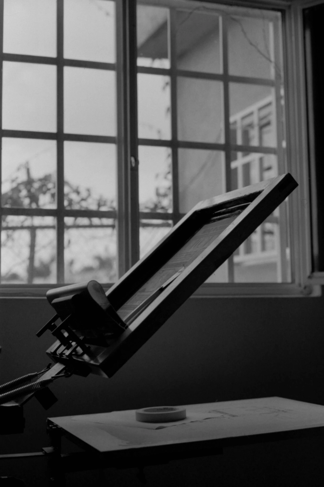

Exempelsida: Calyx, florist i Stockholm
Öppna Calyx
Webbdesign, design och system. Allt på ett ställe.

Exempelsida: Calyx, florist i Stockholm
Vi skapar skräddarsydda webbplatser som hjälper er att exponera verksamheten.
Ordmärket öppet
Exempelsida: Calyx, florist i Stockholm
Öppna Calyx

Exempelsida: Hōrai, Asian fusion-koncept
Öppna HōraiExempelsida: Hyperborea, konferens i Lund
Öppna Hyperborea
Identitet, typografi och layout, ritade innan koden skrivs.
Handskriven kod utan färdiga teman. Sidan förblir er egen.
CMS, bokning, betalning och kunddatabas i samma lösning.
Paket
Standardpaket. Webbplats med CMS för egna ändringar och en första SEO-optimering.
26 900 krPaket med bokningssystem, betalning och kunddatabas.
38 900 krHelt skräddarsydda lösningar för produktkataloger, specialbyggda system med mera
Pris vid förfrågan